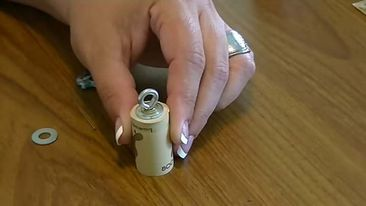
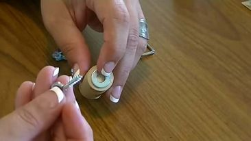
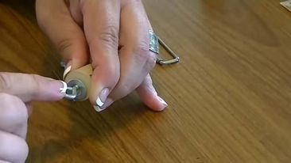
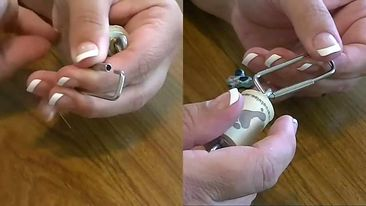
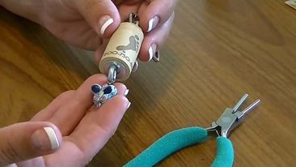

Collect wine corks and turn them into unique key-chains by attaching a small eye screw and keyring. You can even paint or personalize the corks for added flair!
STEP 1: First, we need to put the larger size of our washer on our wine cork. And next, put our smaller size of our washer inside of the larger size of washer.

STEP 2: Put the screw eye hook at the center of our washers then screw it until it's tight.
STEP 3: At the bottom of our wine cork, put a larger size of a washer, and put a screw eye hook at the center of the washer.
STEP 4: And push it until it's tight.
STEP 5:Put a key-chain inside of the screw eye hook at the top of the wine cork.
STEP 6: You can add any decorations that you want to add on your wine cork to make it look more amazing.
